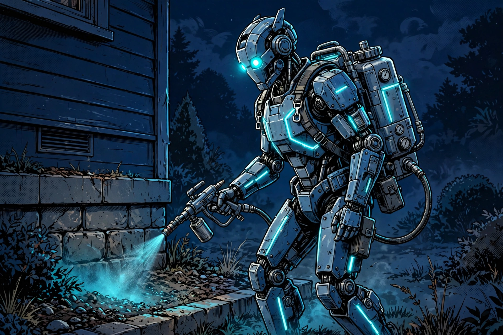
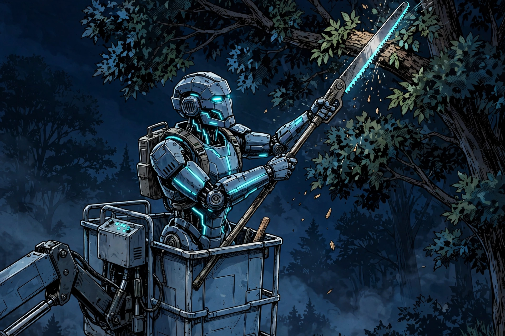
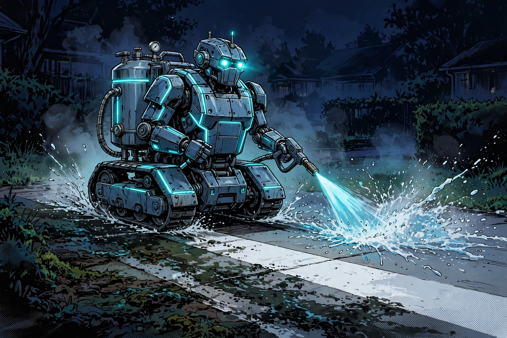
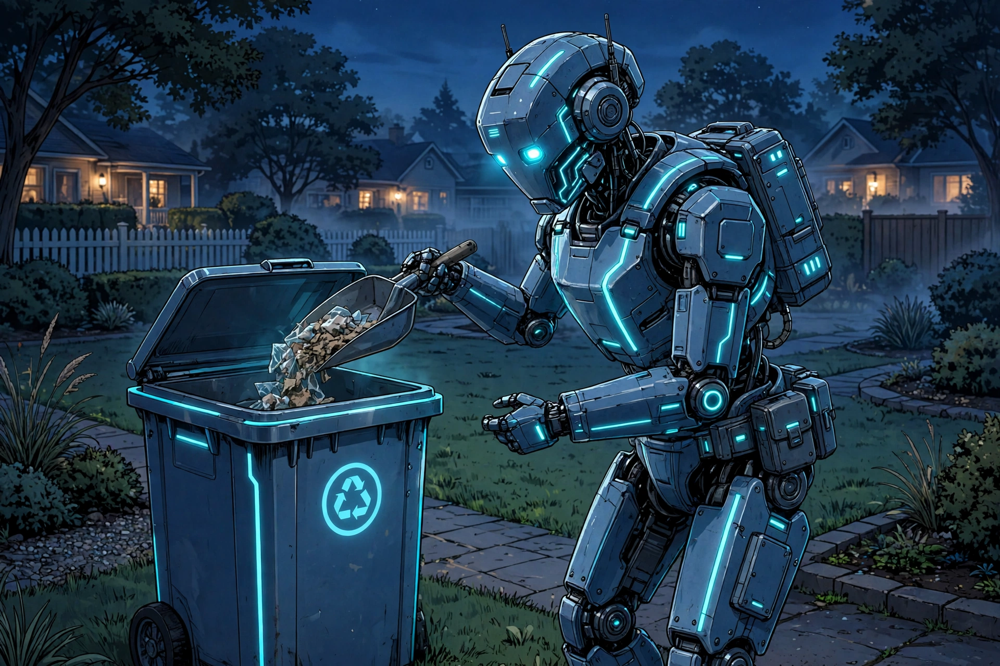

A customer calls.
A named assistant answers and clearly introduces itself as AI—whether it's midday or midnight.
YOUR FRONT DESK HAS ENTERED THE FUTURE
Four specialized AI assistants. One connected front desk. Every incoming call becomes a clear next step for your real crew.
NO BUILDING. NO SETTINGS PAGES. NO CONFUSION.
Other platforms sell you parts and call it a bot. RingAnvil delivers a finished, graded AI team — this is what the new generation of phone answering actually feels like.
01 / BUILT FOR THE REAL WORLD
RingAnvil is designed to feel like the future: holographic, responsive, and built around an AI crew that handles inbound calls like a digital operations team. We do the setup, the testing, and the launch prep.
A named assistant answers and clearly introduces itself as AI—whether it's midday or midnight.
The assistant gathers the issue, location, urgency, and preferred appointment window.
Instead of a missed-call notification, your team has a structured handoff to review and confirm.
02 / MEET THE CREW
Each bot has a distinct role, visual identity, and handoff responsibility. The result feels less like software and more like a live AI crew running mission control for your phones. This month the crew is wearing the season — Santa hats on, off again January 2.
The first voice your customer hears.
Answers incoming calls, identifies as an AI assistant, and starts the intake.
Runs your onboarding interview.
Collects your shop's facts, your CRM, and your assistant pick — so the desk that goes live is unmistakably yours.
Verifies the setup before go-live.
Confirms number routing, windows, the CRM connection, and your picked voice — nothing goes live unverified.
Confirms every signup, warmly.
The friendly confirmation call minutes after a shop joins — and a pickable front-door voice in his own right.
These are functional roles in the RingAnvil service concept. Actual enabled workflows and integrations are confirmed during pilot onboarding.
03 / YOUR CHOICE
Every assistant below runs the same graded system: full trade knowledge, honest windows, jobs filed to your CRM. You pick who answers in your name at onboarding; we verify the pick before you go live. Portraits are our bots drawn as bots — we rep them openly.
The proven default.
Technically sharp, calm under pressure — the voice already answering on our live demos.
The specialist's warmth.
She also runs your onboarding interview, so your customers meet one continuous team from first call to first job.
The confirmer at your front door.
Precise and steady — built for outdoor trades and detail-heavy jobs.
Bright, quick, reassuring.
The same Jordan who confirms every new signup can also be the voice your customers hear first.
The honesty rule applies to voices too: a configuration is offered in a market only after it passes that market's graded live calls and knowledge battery — the same gate as everything else here. Amber, Riley and Jordan are in that pipeline now.
04 / INTERACTIVE PRODUCT PREVIEW
Choose a scenario and watch the RingAnvil AI sequence unfold. This is a scripted website simulation designed to show the look and feel of the future experience—not a live phone or CRM connection.
No audio. No recording. No personal information collected.
Prefer a real call? The live plumbing demo line is +1 (602) 587-0302, on our flagship site ringanvil.com. It answers as Alex for RingAnvil, in a live demonstration of how it answers for a plumbing company, and takes real job details.
Hi, this is Alex — an AI assistant answering for a plumbing company. How can I help you today?
05 / MARKETS
A market goes live only when its playbook, graded calls, tentative-window test, knowledge battery and pricing all pass. Until then it carries its true status — here and everywhere.
LIVE TODAY Plumbing — proven on graded live calls. LIVE TODAY HVAC — graded calls and knowledge battery passed. HVAC depth lives on the HVAC market page.
 LIVEHVAC
LIVEHVAC  LIVEPlumbing STAGEDRoofing STAGEDElectrical STAGEDLandscaping
LIVEPlumbing STAGEDRoofing STAGEDElectrical STAGEDLandscaping 
STAGEDPest Control STAGEDPainting STAGEDFlooring STAGEDAppliance Repair STAGEDCarpet Cleaning STAGEDGarage Door STAGEDGutters STAGEDJunk Removal STAGEDLocksmith STAGEDConcrete
STAGEDTree Service STAGEDPool Service STAGEDWindow & Door STAGEDGeneral Contractor STAGEDHandyman STAGEDCar Wash STAGEDTow Service STAGEDHouse Cleaning STAGEDMold Remediation STAGEDMoving Company STAGEDWater Restoration
STAGEDGeneral Contractor STAGEDHandyman STAGEDCar Wash STAGEDTow Service STAGEDHouse Cleaning STAGEDMold Remediation STAGEDMoving Company STAGEDWater Restoration 
STAGEDPressure Washing STAGEDSolar STAGEDCPA & Tax STAGEDHR Consulting
STAGEDPet Waste Removal STAGEDMSP & IT Support STAGEDDental STAGEDLaw Firm STAGEDReal Estate STAGEDAuto Repair STAGEDFence STAGEDAuto Detailing STAGEDFire Restoration STAGEDEngineering Firm PLANNEDRestaurants — order-taking (new)
PLANNEDRestaurants — order-taking (new) 06 / WHY IT FEELS DIFFERENT
Our AI assistants identify themselves plainly on calls.
The assistant can collect a tentative window. Your team confirms actual availability and booking.
We configure, test, and grade the market experience before activation.
07 / THE HONEST SIDE-BY-SIDE
The category's best-known name, HeyRosie, is self-serve: you upload your FAQs, configure it yourself, and one persona answers. Here's the honest side-by-side with what we built instead.
HeyRosie: your uploaded business FAQs — hours, prices, policies.
RingAnvil: your facts PLUS the trade itself — cost drivers, repair-vs-replace logic, prep, process — proven on a graded Q&A battery per market.
HeyRosie: calls logged into your CRM at higher tiers; booking runs through a calendar.
RingAnvil: intake becomes a client + a job, the window lands with it, the summary files as notes — and every integration claim on this site is graded by a public honesty register.
HeyRosie: you do — FAQs, greetings, training files, self-configured integrations.
RingAnvil: we do — Alex closes, Amber interviews, Riley verifies and switches you on.
HeyRosie: one renameable persona.
RingAnvil: a named AI team — Alex, Amber, Riley, Jordan — each with a role, repped openly as bots.
HeyRosie: entry tier texts a booking link.
RingAnvil: a tentative window held live on the call, confirmed by your team — labeled exactly that way.
HeyRosie: $49/mo self-serve.
RingAnvil: $299/mo done-for-you — a different product, priced like one. We don't chase the floor; we out-depth it.
08 / STRAIGHTFORWARD PRICING
Done-for-you monthly service. Exact scope, minutes, setup fee, integrations, and activation date are defined in your service agreement.
$500 setup · 500 minutes included · $0.25/min overage. For overflow and after-hours — the calls you currently miss entirely.
$1,000 setup · 1,250 minutes included · $0.22/min overage. The whole answering desk, business hours and beyond.
$1,000 setup · 2,000 minutes included · $0.22/min overage. Full Desk plus the follow-up engine: booking-link texts after missed calls and appointment reminders — inbound-triggered, consent-based.
Charter terms, exactly as sold: setups, included minutes and overage above are the contract numbers, not teasers. A second market is a second desk at the same tier — setup is not waived. Checkout runs on Apex Stripe through our flagship's plans page: ringanvil.com/#plans. Plumbing is live; every other market activates only when its gate passes.
09 / GOOD QUESTIONS
RingAnvil is an AI phone-answering service. Its assistants identify themselves as AI. A real business owner or staff member remains responsible for confirming bookings and providing services.
The intended workflow captures customer preferences and a tentative time window. A booking is not considered confirmed until your business verifies availability and accepts it.
Plumbing and HVAC are live — each proven on graded live calls, its tentative-window test and its knowledge battery passed. Every other market is staged behind the same gate; the markets section shows each one's true status.
We'll discuss your current phone and job-management setup during discovery. Exact compatibility, routing, integrations, and any additional charges must be confirmed before activation.
No — and that's deliberate. Self-serve platforms hand you a blank bot, a settings page, and the confusion that comes with both: you're getting "an AI bot" without ever feeling what a great one is like. RingAnvil is the opposite. You get a finished AI team — taught your trade from a full knowledge base, configured with your shop's own facts, and graded on live calls before it answers in your name. You don't build a bot here. You get a great one.
Yes — the live plumbing demo line is +1 (602) 587-0302 on our flagship site, ringanvil.com. It answers as Alex for RingAnvil, in a live demonstration of how it answers for a plumbing company, and takes real job details. The interactive preview above is a scripted text simulation of the same flow.
ACTIVATE RINGANVIL / LET'S TALK
Tell us about your call volume, service area, and workflow. We'll show you how the AI crew would fit into your operation and what needs to be verified before launch.
Ask about the pilot Opens your email app · No payment collected on this page · Prefer the flagship? ringanvil.com